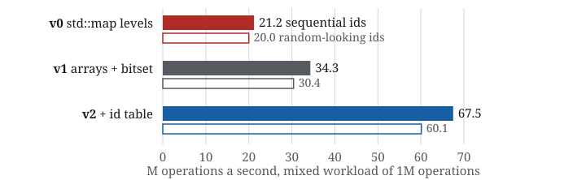
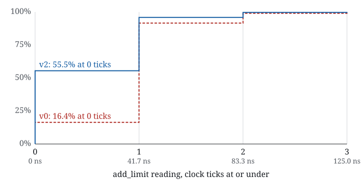

From 21M to 65M ops/s: two changes to a C++ order book
I’m building lob-engine, a limit order book in C++20, to learn how matching engines are made fast. This is a log of the first two optimisations, with the numbers at each step, the step that made things slower, the benchmark that turned out to be too kind, and a replay of 20 minutes of real exchange data. Every lob-engine commit is co-authored with Claude Code; the colophon says how.
| Version | Change | Mixed workload M ops/s | Add + cancel ns |
|---|---|---|---|
| v0 | std::map price levels | 20.9 | 32.9 |
| v1 | flat arrays + a bitset | 35.7 | 28.8 |
| v2 | open-addressing id table | 65.2 | 9.4 |
3.1× on the mixed workload, 3.5× on add + cancel. 1M seeded operations: 55% limit orders near the mid, 40% cancels, 5% market orders. Apple M4, Apple clang 17, -O3, median of 10 interleaved repetitions, on a machine that wasn’t idle. For the mixed workload, all three sized for 262,144 orders; add + cancel runs on a warm book of 200 resting orders. v0 and v2 at 2265115; v1, the book from 536cb05, at 103a6b0 on branch v1-random. Receipts: claims ledger.

tools/plot_steps.py in this site’s repo, with figures copied from the raw output at 2265115 and, for v1, 103a6b0.v0: the baseline, and how I know it’s right
An order book keeps resting buy and sell orders sorted by price, and orders at the same price in arrival order. An incoming order that crosses the spread trades against the best opposite price first, oldest order first.
v0 is the textbook version. Each side is a std::map from price to a level. Orders come from a pre-allocated pool, and each level chains its orders in an intrusive doubly linked list, so resting an order never allocates and a cancel is O(1) once the order is found. Finding it is a std::unordered_map from order id to pool slot.
Before optimising anything I wanted a way to tell whether a faster version was still correct. The test suite includes a deliberately naive reference book (plain vectors, linear scans), and a differential test pushes 20,000 random operations through both, comparing every trade, the best bid and ask, the order count and the depth at every price after every step, over 10 seeds.
My first version of that test passed with a bug planted in it. The random orders crossed the spread so often that queues never formed, so time-priority bugs had nothing to break. Biasing the flow towards passive orders and adding explicit “increase size at the same price” modifies fixed it. Since then, bugs have been planted on purpose to check that the tests catch them; it’s 16 so far, and the tests catch all of them. You can step through five of them on the home page.
v1: flat arrays, which made it slower first
Exchanges limit how far prices can move, so the price levels can live in a flat array indexed by tick: finding a level becomes one subtraction instead of a tree walk. I gave each side an array covering 65,536 ticks and cached the index of the best level.
The cost moves to the moment the best level empties, when the next one has to be found. I added a benchmark for the case that should hurt: 50 asks spaced far apart, cleared one at a time by market orders.
| Sweep of 50 levels, µs | v0std::map | v1 + bitset | v2 + id table |
|---|---|---|---|
| 1-tick gaps | 1.56 | 0.90 | 0.43 |
| 100-tick gaps | 1.56 | 0.98 | 0.46 |
| 1,000-tick gaps | 1.57 | 1.20 | 0.60 |
With the bitset, v1 clears sparse levels faster than std::map at every gap. BM_SparseSweep: 50 asks, cleared one level at a time by market orders; only the sweep is timed. Apple M4, Apple clang 17, -O3, median of 10 interleaved repetitions. Raw output at 2265115 (v0, v2) and 103a6b0 (v1).
The first array version was slower than the map. In the earlier harness it took 22.5 µs a sweep with 1-tick gaps, against 2.0 µs for std::map.That harness also timed a pause and resume of the benchmark timer, about 0.4 µs, and the book’s teardown, and the build with this bug was never committed. The table above times only the sweep (b3e2236), so the two sets of figures aren’t comparable. That figure didn’t make sense: with 1-tick gaps there’s almost nothing to scan. When the last ask was cleared, the scan walked the whole 65,536-tick band looking for an ask that didn’t exist. The book already counted its levels, so it now checks the count and skips the scan when a side is empty.
That left real gaps. Walking the array one level at a time still took 3.0 µs a sweep with 100-tick gaps and 14.8 µs with 1,000-tick gaps, in the same harness. The fix is one bit per price level, set while the level has orders. Finding the next non-empty level then checks 64 levels per step with std::countr_zero, which beats following std::map pointers even with 1,000 empty ticks between levels.
v2: the benchmark was flattering std::unordered_map
After v1, the largest cost left was looking orders up by id. Every add checks for a duplicate, every cancel looks the order up, and every fill removes one. std::unordered_map allocates a node per order, and each lookup follows a bucket pointer and then a node pointer.
Before replacing it I looked at what the benchmark fed it. The generator numbered orders 1, 2, 3 and so on. That’s unusually kind to unordered_map: with libc++, consecutive ids land in consecutive buckets, and nodes allocated one after another tend to sit close together in memory. A real feed rarely gives one book a dense 1, 2, 3 run: on Nasdaq ITCH, for example, order numbers are assigned across every instrument, so a single book sees a sparse, interleaved subset, and scrambled ids are the pessimistic version of that. Scrambling the same ids with a bijective mixer (the splitmix64 finaliser, so they stay unique) cost v1 about an eighth of its throughput, from 35.7M to 31.2M ops/s (the chart above).The finaliser is a bijection on 64-bit integers, so every id maps to a different id: the scrambled run has the same orders, prices and sizes, and only the id bits change. It turned out not to be special to unordered_map: v2’s table, once built, lost about as much, from 65.2M to 56.2M, so scrambled ids are the fairer test for both.
The replacement, IdTable, is about 100 lines:
- A flat array of 16-byte entries, each an order id and a pool slot.
- Linear probing, kept at most half full, so a lookup usually touches one or two neighbouring entries.
- Fibonacci hashing: multiply the id by 264/φ and keep the top bits. One multiply, and sequential ids still spread out.264/φ rounded down is 0x9E3779B97F4A7C15. Keeping the top bits of the product, not the bottom, is what spreads consecutive ids apart.
- Backward-shift deletion instead of tombstones. When an entry is removed, later entries in the same run move back to fill the hole, so a book that runs all day doesn’t fill up with dead entries.
- A fixed capacity, taken from the order pool, so it never rehashes.
include/lob/id_table.hpp at 4fde641, lines 62–83
bool erase(OrderId id) {
std::size_t i = home(id);
for (;; i = (i + 1) & mask_) {
if (entries_[i].value == kEmpty) return false;
if (entries_[i].key == id) break;
}
// Backward shift: walk the rest of the run and pull back any entry
// whose home position is not strictly between the hole and itself
// (cyclically), i.e. any entry the hole would cut off from its home.
std::size_t hole = i;
for (std::size_t j = (i + 1) & mask_; entries_[j].value != kEmpty; j = (j + 1) & mask_) {
const std::size_t h = home(entries_[j].key);
const bool reachable = hole <= j ? (hole < h && h <= j) : (hole < h || h <= j);
if (!reachable) {
entries_[hole] = entries_[j];
hole = j;
}
}
entries_[hole].value = kEmpty;
--size_;
return true;
}Backward shift is easy to get subtly wrong when a run wraps past the end of the array, so the table has its own differential test against std::unordered_map: 20 seeds of 20,000 inserts and erases in a 16-slot table, where nearly every run is long and many wrap. It caught all four bugs planted in the deletion code. A fifth survived, for a reason that isn’t obvious at first: it swapped two checks in a way that can’t change the result, so it’s an equivalent mutant.
The first v2 result was confusing. With sequential ids it was barely faster than v1, and it still is with the book sized the way the benchmark first sized it, for one million orders: 36.0M against 35.5M ops/s. That gives the id table 221 slots, 32 MB, twice the 16 MB L2 that the M4’s performance cores share, and I expect most lookups missed; I haven’t counted the misses yet (that’s the perf stat run below). The workload never has more than about 109,000 live orders. Sized for 262,144, the table has 219 slots, 8 MB, which fits in that L2, and v2 runs at 65.2M, 1.81× its figure sized for 1M. The same change barely moves v1 (35.5M to 35.7M), so sized alike, v2 is 1.8× v1 with either kind of id.
| Book sized for | Id-table slots | Memory | v2 against v1, sized alike |
|---|---|---|---|
| 1,000,000 orders | 221 | 32 MB | 1.01× with sequential ids, 1.33× with random-looking ones |
| 262,144 orders | 219 | 8 MB | 1.83× with sequential ids, 1.80× with random-looking ones |
The table’s memory follows the configured capacity, not the live orders. Slots are twice the capacity, rounded up to a power of two (id_table.hpp line 34). Speeds from the raw output at 2265115 and, for v1, 103a6b0.
Size it for the peak you expect, not the biggest number you can think of.
On real data
A seeded generator is easy to fool yourself with, as the ids showed. So I recorded 20 minutes of Binance’s public BTCUSDT feed (11,992 depth updates and 71,328 trades) with a small recorder that uses only Python’s standard library. It follows Binance’s procedure for keeping a local book and stops at the first sequence gap.
Binance publishes price levels, not individual orders, so the replay has to invent orders that explain each change. A level that grows gets a new order for the difference. A level that shrinks loses size from its newest orders. A trade becomes an incoming order at the trade price, which fills the oldest orders there. After every update, the replay checks the book’s top 10 levels on each side against the exchange’s.This is level-2 data: one total per price, no orders. Queue positions in the replay are inferred from size changes, so they are a model of the queue, not the exchange’s.
The first version of that check found a bug in my translation. A single update can clear an ask and place a bid at the same price. Applying the bid first crosses the stale ask and invents a trade that never happened, so each update now applies its reductions before its additions.
| 20 minutes of BTCUSDT | v0std::map | v2 + id table |
|---|---|---|
| Throughput, M ops/s | 14.7 | 79.4 |
v2 replays the recording 5.4× as fast as v0, on a book small enough to fit in cache. 562,850 order operations, at most 4,203 resting at once; median of 5 runs of lob_replay, Apple M4, Apple clang 17. Recorded 29 October 2026, 02:30–02:50 UTC; the recording isn’t published. Raw output: replay.txt at 2265115.
That’s 5.4×, more than on the synthetic workload, though I wouldn’t read much into the difference: at most 4,203 orders were resting at once, so the whole book fits in cache. The mix, 53.5% adds, 40.3% cancels and 6.2% size reductions, was close to what the generator produces. Level updates outside a $79,575–$80,231 price band (44,015 of 544,092) were skipped. v0 and v2 end with the same 63,498 fills and 3,985 resting orders.
The top 10 levels matched the exchange after 99.93% of updates. The other 0.07% come from the feed, not the book. Binance doesn’t sequence trades against depth updates, so a trade sometimes arrives after the update that already includes it, and the replay removes that size twice until the next update for the level corrects it. Replaying the same recording without trades matches after every update.
What went wrong, and what caught it
| What went wrong | What caught it |
|---|---|
| A scan of the full 65,536-tick band | The sparse-book benchmark |
Sequential ids flattering unordered_map | The same ids, scrambled |
| A 32 MB id table | v2 not speeding up with sequential ids |
| A bid applied before the ask it replaced | The top-10 check in the replay |
| The first differential test passing with a bug | Planting bugs on purpose |
Reproduce it
The four commands from the README. The last two need your own recording, since recordings aren’t committed.
README.md at 1ae04f9
cmake -S . -B build -DCMAKE_BUILD_TYPE=Release && cmake --build build -j
./build/lob_tests && ./build/lob_bench && ./build/lob_latency
python3 tools/record_binance.py BTCUSDT 1200 data/btcusdt.lobrec
./build/lob_replay data/btcusdt.lobrecPer-number commands, at pinned commits, are in the claims ledger.
If your numbers differ from mine, I’d like to see them, with the machine and compiler: aayushkumr25@gmail.com.
What I can’t measure yet
Apart from the latency ticks and the earlier-harness sweep figures in the v1 section, every benchmark figure on this page is the median of 10 interleaved repetitions (the replay, the median of 5 runs), and the raw output is committed: 2265115 for v0 and v2, 103a6b0 on branch v1-random for v1. The machine wasn’t idle: each of the four runs from 29–30 October started with a load average between 2.4 and 3.8, and where other processes were sampled, Spotlight indexing held about one core. The ratios between versions held steady (v0 agreed within 1% across the two branches, and the two runs on main within 2%), but the absolute figures may be a few percent low.
These are throughput numbers. Latency percentiles are harder on this machine: on Apple Silicon steady_clock ticks every 41.7 ns, so the fastest operations measure as zero or one tick.sysctl hw.tbfrequency prints 24000000 on this M4: one tick is 1/24,000,000 of a second. Victor Zverovich measured about 41 ns on an M1. My latency tool measures the clock first and, when it’s this coarse, warns that its nanosecond figures are really tick counts; the charts here convert them to ticks.

add_limit calls in a 1M-operation run that read at most k ticks; a 0 means no tick fell inside the call. p99 is 2 ticks for both; p99.9 is 14 ticks for v0 and 3 for v2. Data: m4-quantiles.csv at 4fde641, binned by round(ns / 41.67) in tools/plot_cdf.py.add_limit readings at or under | v0, % | v2, % |
|---|---|---|
| 0 ticks | 16.4 | 55.5 |
| 1 tick | 91.6 | 95.9 |
| 2 ticks | 99.0 | 99.7 |
| 3 ticks | 99.7 | 99.9 |
Every reading is a whole number of ticks; an earlier version of this chart drew two steps per tick (see Revisions).
Next I’m running on Linux with a TSC-based timer and perf stat, to get real percentiles and cache-miss counts for each version.
The code, the benchmarks and the recorder are at github.com/aayxshkumar/lob-engine.
Revisions
- . First version.
- . The latency chart now bins readings by clock tick. The first plot drew two steps per tick, because
m4-quantiles.csvwrites one tick as 41 or 42 ns. It now bins byround(ns / 41.67)and labels the axis in ticks. - . Removed a sentence that put v2’s gain with random ids, while the table was oversized, at 40%. No committed run gives that figure; the paragraph now uses the README’s numbers.
- . Corrected the sizing note. v1’s 34.3M was measured at 536cb05, whose benchmark sizes the book for all 1M operations; v0 and v2 are sized for 262,144.
- . The commit message of 504521f says 20.1M → 34.0M ops/s. Those were the README’s v0 and v1 medians until 4fde641, which gives 21.2M and 34.3M. The numbers here are the later ones.
- . The latency chart’s caption said v2 finishes 55.5% of adds inside one clock tick, and the axis had a 0 ns label. A reading of 0 ticks means no tick fell inside the call, so the caption now says those calls read 0 ticks and the label is gone.
- . The differential test now compares depth at every price after every step, over 10 seeds (688ad43). Before that it compared depth once, after 20,000 steps, on one seed.
- . The paragraph on the id table sized for 1M said v1 and v2 tied at 34.4M. That was the first run; the committed rerun gives v2 37.7M. It now names the cache, the 16 MB L2 the performance cores share, and says the misses haven’t been counted.
- . Replaced a remark that real venues send ids that look random with how ITCH assigns them: order numbers are shared across all instruments, so one book sees a sparse, interleaved subset.
- . Marked v1’s random-id figure as never committed; another run gave a different result.
- . Reworded the planted-bug sentences so they don’t say who planted each bug; the work is co-authored with Claude Code (colophon).
- . Every throughput number, and the add + cancel and sparse-sweep figures, now come from committed runs with the raw output in the repo: 2265115, and for v1 103a6b0 on branch v1-random. Each benchmark is the median of 10 interleaved repetitions (the replay, the median of 5 runs), with all three versions sized for 262,144 orders. They replace the earlier figures, 21.2M → 34.3M → 67.5M ops/s (median of 3, raw output not kept, v1 sized for 1M), so the title now says 65M instead of 68M. v1’s random-id figure is now measured and committed. The sparse sweep now times only the sweep, so the linear-scan figures are marked as from the earlier harness. The machine wasn’t idle during these runs; see What I can’t measure yet.